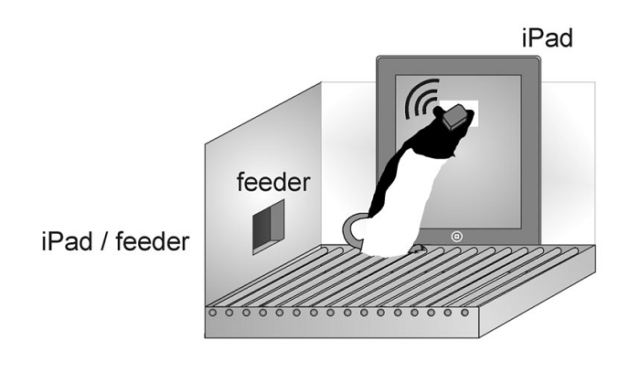

Touchscreen Platforms for Rodents

Here's an interesting paper about designing a low-cost touchscreen operant chamber using a raspberry pi. Perhaps the most important takeaway here is that rats performed twice as well in the Med Associates commercial chamber. Commercial products are often more refined than DIY solutions and this is just a great reminder of the trade-off we have to think about with each piece of equipment.